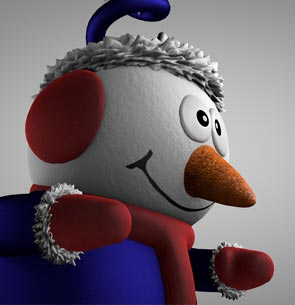
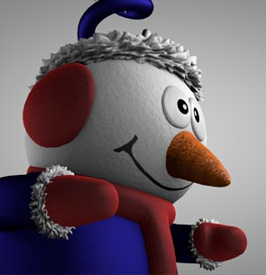

The Happy Snowman was the last character I worked on before my second semester of junior year. With ambient occlusion and complex cloth textures, my renders were a little longer than most of my models. I had a lot of fun playing with different bump maps for each material, which needed to be perfect for the snow and carrot. This was the first time I utilized displacement maps for the cufflinks and brim of his festive hat. Altogether, I enjoyed with how the finished product came out.
Buzz Lightyear was the first character I modeled for my Modeling 1 class. I went back a year later to texture him and fix up some topology issues, and I'd still like to improve the sculpting on his face.
I modeled this evil clown after his designs by Fred Fields were given to me by my 3D Modeling professor. This was the first project I modeled, textured, and lit within Cinema 4D. It definitely helped me learn more about texturing, specifically with normal maps and transparency.
I designed this friendly alien for my 3D Modeling class sophomore year and went on to model him soon after. This project helped me hone my procedural texturing skills as well as character modeling. Although he may look like a simpler model, I have spent a lot of time perfecting him to my initial design and trying new things out.